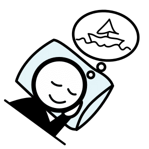
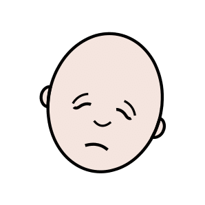

Thématique A · CAP
Fiche de révision A2 — Le sommeil, un rythme biologique
Révise en t'amusant, écoute, puis imprime ta fiche
Fais défiler la page : les notions apparaissent une à une. Touche les cartes pour les retourner, touche 🔊 Écouter pour entendre une carte, une question ou une correction, puis réponds aux questions « Je vérifie mes acquis ».
1. Les rythmes biologiques
Touche une carte pour voir la définition.
Le rythme veille-sommeil suit un cycle d'environ 24 heures. Il est réglé par une horloge biologique, ou horloge interne, située dans le cerveau.
2. La lumière et la mélatonine
 La lumièreCaptée par l'œil, elle règle l'horloge interne du cerveau. Elle bloque la production de mélatonine.
La lumièreCaptée par l'œil, elle règle l'horloge interne du cerveau. Elle bloque la production de mélatonine. La mélatonineL'hormone du sommeil. Elle est produite dans l'obscurité et prépare l'endormissement.
La mélatonineL'hormone du sommeil. Elle est produite dans l'obscurité et prépare l'endormissement.3. Les cycles et les phases du sommeil
 1. L'endormissementOn commence à dormir.
1. L'endormissementOn commence à dormir.2. Le sommeil lent légerLe sommeil est encore léger.
3. Le sommeil lent profondLe sommeil devient profond.

4. Le sommeil paradoxalIl est propice aux rêves.Une nuit de sommeil est une suite de 3 à 6 cycles. Un cycle dure de 60 à 120 minutes, 90 minutes en moyenne.
4. À quoi sert le sommeil ?
Touche une carte pour la retourner.
Un adulte a besoin d'au moins 7 heures de sommeil par 24 heures. Kevin dort quatre heures et demie : sa récupération est insuffisante, d'où sa fatigue.
5. Les horaires décalés
Le travail de nuitLe travail entre 21 heures et 6 heures.
Le travail postéLe travail en équipes qui se relaient sur les mêmes postes, à des heures différentes.
 Le décalage horaireAprès un long voyage en avion, l'heure change et l'horloge biologique est déréglée.
Le décalage horaireAprès un long voyage en avion, l'heure change et l'horloge biologique est déréglée.Ces horaires désynchronisent l'horloge biologique : le corps reçoit des signaux contraires. Les salariés de nuit dorment 1 à 2 heures de moins par jour. Le sommeil de jour est plus court, coupé, gêné par le bruit : il est moins réparateur.
6. Le manque de sommeil

Les conséquencesFatigue, irritabilité, baisse de la vigilance et de la mémoire, réactions plus lentes.Le risque d'accidentLe risque d'accident augmente, au travail et sur la route. La vigilance baisse surtout entre 2 heures et 5 heures du matin.
7. L'hygiène du sommeil
Touche une carte pour voir le conseil.
Pour Kevin : dormir dans une chambre sombre et calme, arrêter le téléphone une heure avant de dormir, ne plus boire de boissons énergisantes.
Je vérifie mes acquis : 0 / 0